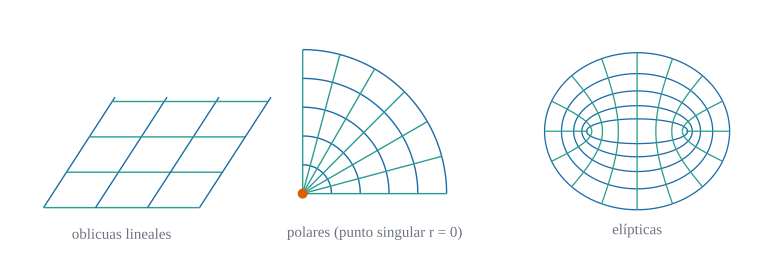
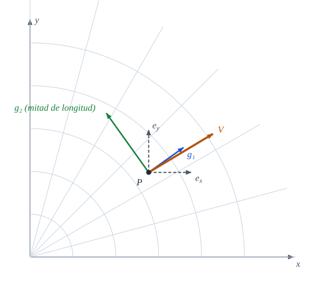
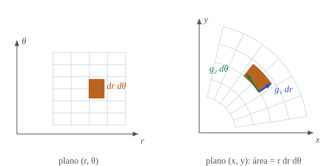

3 Transformación de coordenadas y tensores
Cómo cambian los números cuando cambia el sistema de referencia

Cuando cambiamos de sistema de coordenadas, los números de un vector cambian pero el vector no: qué regla exacta relaciona unos con otros
Objetivos y prerrequisitos
Objetivos. Al terminar el tema sabrás:
- definir un cambio de coordenadas admisible y calcular su matriz jacobiana y la de su inversa;
- interpretar el determinante jacobiano como razón de áreas o volúmenes;
- enunciar las leyes de transformación de componentes contravariantes y covariantes y definir un tensor por cómo se transforman sus componentes;
- reconocer los invariantes y usarlos como criterio de corrección de una fórmula;
- comprobar todo en Julia con el cambio cartesianas → polares.
Prerrequisitos. La cáscara y el paraboloide hiperbólico y derivadas parciales con la regla de la cadena.
Secciones del tema
- Sección 3.1 · Motivación · Sección 3.2 · Cambios de coordenadas admisibles · Sección 3.3 · El jacobiano como factor de área
- Sección 3.4 · Transformación de componentes y tensores · Sección 3.5 · Invariantes
- Sección 3.6 · Laboratorio interactivo · Sección 3.7 · Práctica guiada en Julia
3.1 Motivación
En el Sección 1.4.1 se insistió en que un vector \(\mathbf{V}\) es un objeto geométrico y que sus componentes dependen de la base. La Figura 3.1 lo muestra con un ejemplo: en el punto \(P\) del plano, el mismo vector se descompone sobre la base cartesiana \(\{\mathbf{e}_x,\mathbf{e}_y\}\) o sobre la base polar \(\{\mathbf{g}_1,\mathbf{g}_2\}\), con listas de números diferentes.

La pregunta de este capítulo es: ¿qué regla relaciona las dos listas de números? La respuesta es la ley de transformación, y es lo que define, en sentido estricto, a un tensor.
ImportanteIdea clave
Un tensor no es «una matriz de números». Es un objeto geométrico cuyas componentes, en cualquier sistema de coordenadas, se transforman de una manera precisa. Esa regla es la que garantiza que las ecuaciones de la física valgan en cualquier sistema.
3.2 Cambios de coordenadas admisibles
Definición 3.1 (Cambio de coordenadas admisible) Sean \(\theta^1,\dots,\theta^n\) unas coordenadas en una región \(\Omega\). Un cambio de coordenadas es un conjunto de funciones \[ \theta'^{\,i}=\theta'^{\,i}(\theta^1,\dots,\theta^n),\qquad i=1,\dots,n, \tag{3.1}\] de clase \(C^1\) con inversa \(\theta^i=\theta^i(\theta'^1,\dots,\theta'^n)\) también de clase \(C^1\). Es admisible en \(\Omega\) si el determinante de su jacobiana no se anula en ningún punto de \(\Omega\).
Definición 3.2 (Matrices jacobianas) La jacobiana del cambio ecuación 3.1 y la de su inversa son \[ J^i{}_j=\frac{\partial\theta'^{\,i}}{\partial\theta^{\,j}}, \qquad \tilde J^i{}_j=\frac{\partial\theta^{\,i}}{\partial\theta'^{\,j}} . \tag{3.2}\] El primer índice numera la fila y el segundo la columna.
Proposición 3.1 (Las jacobianas son inversas) Si el cambio es admisible, \(\tilde J=J^{-1}\), es decir \[ \frac{\partial\theta'^{\,i}}{\partial\theta^{\,k}}\,\frac{\partial\theta^{\,k}}{\partial\theta'^{\,j}}=\delta^i_j . \tag{3.3}\]
NotaDemostración de Proposición 3.1
Derivando la identidad \(\theta'^{\,i}(\theta(\theta'))=\theta'^{\,i}\) respecto de \(\theta'^{\,j}\) con la regla de la cadena se obtiene \(\dfrac{\partial\theta'^{\,i}}{\partial\theta^{\,k}}\dfrac{\partial\theta^{\,k}}{\partial\theta'^{\,j}}=\dfrac{\partial\theta'^{\,i}}{\partial\theta'^{\,j}}=\delta^i_j\). En forma matricial, \(J\tilde J=I\). \(\blacksquare\)
AdvertenciaDónde falla un cambio de coordenadas
Las coordenadas polares son admisibles en \(r>0\), pero no en el origen: allí \(\det J\) se anula (o no está definido), la base \(\{\mathbf{g}_1,\mathbf{g}_2\}\) degenera (\(\mathbf{g}_2=\mathbf{0}\)) y \(\theta\) carece de valor. Es el punto singular que muestra la Figura 3.2. Lo mismo ocurre en los polos de las coordenadas esféricas. Los resultados de este libro valen fuera de esos puntos.
Ejemplo 3.1 (Ejemplo resuelto: la jacobiana cartesianas → polares) Con \(r=\sqrt{x^2+y^2}\) y \(\theta=\operatorname{atan2}(y,x)\), las derivadas son \(\partial r/\partial x=\cos\theta\), \(\partial r/\partial y=\sin\theta\), \(\partial\theta/\partial x=-\sin\theta/r\), \(\partial\theta/\partial y=\cos\theta/r\), de modo que \[ J=\frac{\partial(r,\theta)}{\partial(x,y)}=\begin{pmatrix}\cos\theta&\sin\theta\\[2pt]-\dfrac{\sin\theta}{r}&\dfrac{\cos\theta}{r}\end{pmatrix},\qquad \det J=\frac1r . \] En el punto \((r,\theta)=(2,\pi/6)\): \(J=\begin{pmatrix}0{,}866&0{,}5\\-0{,}25&0{,}433\end{pmatrix}\) y \(\det J=0{,}5\). Su inversa es \(\tilde J=\dfrac{\partial(x,y)}{\partial(r,\theta)}=\begin{pmatrix}\cos\theta&-r\sin\theta\\ \sin\theta&r\cos\theta\end{pmatrix}=\begin{pmatrix}0{,}866&-1\\0{,}5&1{,}732\end{pmatrix}\) (las columnas son \(\mathbf{g}_1,\mathbf{g}_2\) del tema anterior), y se comprueba \(J\tilde J=I\): por ejemplo \(0{,}866\cdot0{,}866+0{,}5\cdot0{,}5=1\) y \(0{,}866\cdot(-1)+0{,}5\cdot1{,}732=0\).
Pon a prueba lo anterior. Los ejercicios se corrigen en tu navegador y no envían nada a ningún sitio.
Para el cambio cartesianas → polares, ¿cuánto vale \(\det J\) en el punto \(r=2\)?
\(\det J=1/r=0{,}5\).
¿En qué punto no es admisible el cambio a coordenadas polares?
- En \(\theta=\pi/2\)
- En cualquier punto con \(r>1\)
- En el origen \(r=0\)
- En ningún punto
En \(r=0\): allí \(\det J=1/r\) no está definido, \(\mathbf{g}_2=\mathbf{0}\) y \(\theta\) no tiene valor.
3.3 El jacobiano como factor de área
Proposición 3.2 (Elemento de área y de volumen) Sea \(j=\det(\partial\theta'/\partial\theta)\) el determinante jacobiano. Los elementos de volumen (\(n\)-dimensional) en ambos sistemas se relacionan por \[ d\theta'^1\cdots d\theta'^n=|j|\,d\theta^1\cdots d\theta^n,\qquad |j|=\left|\det\frac{\partial\theta'}{\partial\theta}\right| . \tag{3.4}\] En particular, al pasar de polares \((\theta^1,\theta^2)=(r,\theta)\) a cartesianas, \(dx\,dy=r\,dr\,d\theta\).
La Figura 3.3 muestra la idea: la celda \(dr\,d\theta\) del plano paramétrico se convierte en un trozo de corona circular cuyos lados son \(\mathbf{g}_1\,dr\) y \(\mathbf{g}_2\,d\theta\). Su área es el área del paralelogramo que forman, \(\|\mathbf{g}_1\times\mathbf{g}_2\|\,dr\,d\theta=r\,dr\,d\theta\).

NotaDemostración de Proposición 3.2 (caso polar)
Es el teorema del cambio de variable en integrales múltiples, que damos por conocido. Para polares, \(\partial(x,y)/\partial(r,\theta)=\begin{pmatrix}\cos\theta&-r\sin\theta\\ \sin\theta&r\cos\theta\end{pmatrix}\), cuyo determinante es \(r(\cos^2\theta+\sin^2\theta)=r\). Como \(\det J=1/\det\tilde J\) por Proposición 3.1, la jacobiana inversa tiene determinante \(1/r\). \(\blacksquare\)
3.4 Transformación de componentes
Fijado el cambio ecuación 3.1, las componentes de un vector \(\mathbf{V}\) en ambas bases se relacionan así.
Proposición 3.3 (Componentes contravariantes y covariantes) \[ V'^{\,i}=\frac{\partial\theta'^{\,i}}{\partial\theta^{\,j}}\,V^{\,j}=J^i{}_j\,V^j, \qquad V'_{\,i}=\frac{\partial\theta^{\,j}}{\partial\theta'^{\,i}}\,V_{\,j}=\tilde J^j{}_i\,V_j . \tag{3.5}\]
NotaDemostración de Proposición 3.3
La primera relación es la última de ecuación 4.7 (se demuestra en Proposición 4.3 a partir de las bases). Para la segunda, \(V'_i=\mathbf{V}\cdot\mathbf{g}'_i=\mathbf{V}\cdot\tilde J^j{}_i\,\mathbf{g}_j=\tilde J^j{}_i\,V_j\), porque \(\mathbf{g}'_i=\tilde J^j{}_i\,\mathbf{g}_j\). \(\blacksquare\)
Ejemplo 3.2 (Ejemplo resuelto: transformar un vector del plano a polares) Sea \(\mathbf{V}=(0,1)\) (cartesiano) en el punto \((r,\theta)=(2,\pi/6)\). Con ecuación 3.5 y la \(J\) del Ejemplo 3.1: \[ V'^{\,r}=J^r{}_xV^x+J^r{}_yV^y=0{,}866\cdot0+0{,}5\cdot1=0{,}5,\qquad V'^{\,\theta}=-0{,}25\cdot0+0{,}433\cdot1=0{,}433 . \] Es decir, \(\mathbf{V}=0{,}5\,\mathbf{g}_1+0{,}433\,\mathbf{g}_2\). Comprobación: \(0{,}5(0{,}866;\,0{,}5)+0{,}433(-1;\,1{,}732)=(0;\,1)\) ✓.
Pon a prueba lo anterior.
Con los datos del Ejemplo 3.2, ¿cuánto vale la componente contravariante \(V'^{\theta}\)?
Es \(\cos\theta/r\) con \(\theta=\pi/6\) y \(r=2\).
\(V'^{\theta}=\cos(\pi/6)/2=0{,}433\).
¿Cuál de estas expresiones es correcta como fórmula tensorial (índices bien colocados)?
- \(V^iW^i\)
- \(V^iW_i\)
- \(V_iW_i\)
- \(V^i=W_i\)
\(V^iW_i\): un índice repetido debe aparecer una vez arriba y otra abajo; solo así se obtiene un invariante. \(V^iW^i\) y \(V_iW_i\) no son invariantes en una base no ortonormal, y \(V^i=W_i\) iguala objetos de distinto tipo.
Las dos leyes difieren en qué matriz actúa: \(J\) para los índices altos, \(\tilde J=J^{-1}\) (trasladada) para los bajos. Un truco mnemotécnico: un índice alto se transforma como la diferencial \(d\theta^i\) y uno bajo como la derivada parcial \(\partial/\partial\theta^i\).
3.4.1 Tensores de orden dos
Definición 3.3 (Tensor de orden dos) Un conjunto de \(n^2\) números que, en cada sistema de coordenadas, forman la tabla \(T^{ij}\), \(T^i{}_j\) o \(T_{ij}\) es un tensor de orden dos (contravariante, mixto o covariante) si al cambiar de coordenadas se transforma según \[ \begin{aligned} T'^{\,ij}&=J^i{}_k\,J^j{}_l\,T^{kl},\\ T'^{\,i}{}_{j}&=J^i{}_k\,\tilde J^l{}_j\,T^{k}{}_{l},\\ T'_{\,ij}&=\tilde J^k{}_i\,\tilde J^l{}_j\,T_{kl}. \end{aligned} \tag{3.6}\] Un vector es un tensor de orden uno, y un escalar es un tensor de orden cero (no cambia). Esta forma de definir el tensor por su ley de transformación es la clásica (Heinbockel 1996; Lebedev y Cloud 2003).
La definición se extiende a órdenes mayores: un factor \(J\) por cada índice alto y un factor \(\tilde J\) por cada índice bajo.
AdvertenciaUn array no es un tensor
Que \(T^{ij}\) sea una tabla \(2\times2\) no basta: hay que saber cómo se transforma. El ejemplo más importante lo veremos en el tema de Christoffel (Sección 6.2): los símbolos de Christoffel \(\Gamma^k_{ij}\) se escriben como un array de tres índices, pero no son un tensor, porque son nulos en cartesianas y no nulos en polares, y un tensor nulo en un sistema es nulo en todos. La prueba de que un objeto es tensorial es siempre la ley ecuación 3.6.
Proposición 3.4 (El tensor métrico es un tensor) Las componentes \(g_{ij}=\mathbf{g}_i\cdot\mathbf{g}_j\) se transforman como un tensor covariante de orden dos, y los \(g^{ij}\) como uno contravariante.
NotaDemostración de Proposición 3.4
Como \(\mathbf{g}'_i=\tilde J^k{}_i\,\mathbf{g}_k\), \(g'_{ij}=\mathbf{g}'_i\cdot\mathbf{g}'_j=\tilde J^k{}_i\tilde J^l{}_j\,\mathbf{g}_k\cdot\mathbf{g}_l=\tilde J^k{}_i\tilde J^l{}_j\,g_{kl}\), que es la tercera fila de ecuación 3.6. La versión contravariante es la matriz inversa: \(g'^{ij}=J^i{}_kJ^j{}_l\,g^{kl}\). \(\blacksquare\)
3.5 Invariantes
Los tensores son útiles porque permiten construir cantidades que no dependen de las coordenadas.
Proposición 3.5 (Contracciones invariantes) Si \(V^i,W_i\) son las componentes de dos vectores y \(T^i{}_j\) las de un tensor mixto, son invariantes (idénticos en cualquier sistema): \[ V^iW_i,\qquad T^i{}_i,\qquad g_{ij}V^iV^j=\|\mathbf{V}\|^2 . \tag{3.7}\]
NotaDemostración de Proposición 3.5
Con ecuación 3.5 y ecuación 3.3, \(V'^iW'_i=J^i{}_j\,\tilde J^k{}_i\,V^jW_k=\delta^k_j\,V^jW_k=V^jW_j\). Del mismo modo, \(T'^i{}_i=J^i{}_k\tilde J^l{}_i\,T^k{}_l=\delta^l_k\,T^k{}_l=T^k{}_k\). \(\blacksquare\)
ImportanteIdea clave
Criterio de corrección. En una fórmula con índices, cada índice libre debe aparecer en los dos miembros en la misma posición (alto o bajo) y cada índice repetido debe aparecer una vez arriba y otra abajo. Si es así, la ecuación se conserva al cambiar de coordenadas. Si no, hay un error (o un objeto que no es tensor).
3.6 Laboratorio interactivo
Laboratorio · Un vector en cartesianas y en polares
calculado en el navegador Verificado frente a Julia (web/tests/laboratorios.test.mjs).
Elige un punto \((r,\theta)\) y un vector \(\mathbf{V}=(V_x,V_y)\) (cartesiano). Se dibujan la base polar natural y el vector, y se calculan las componentes polares con la ley de transformación. Qué observar:
- \(\det J=1/r\): al alejarte del origen, un mismo \(d\theta\) barre más área.
- \(V^\theta=V\cdot\mathbf{g}^2\) disminuye con \(r\) aunque \(\mathbf{V}\) no cambie (porque \(\mathbf{g}_2\) crece con \(r\)).
- Con \(\mathbf{V}=(1,0)\) y \(\theta=0\), \(V^r=1\) y \(V^\theta=0\); gira \(\theta\) y las componentes se reparten.
- Para cualquier punto, \(V^iV_i\) es igual a \(V_x^2+V_y^2\) (invariante).
3.7 Ejemplo computacional en Julia
TipEjemplo computacional
calculado Cartesianas → polares en el punto \((r,\theta)=(2,\pi/6)\). La jacobiana \(\partial(r,\theta)/\partial(x,y)\) se obtiene por diferencias finitas y se compara con la inversa de la base polar.
using Geometria, LinearAlgebra
a_polar(x) = [hypot(x[1], x[2]), atan(x[2], x[1])] # (x,y) ↦ (r,θ)
r, θ = 2.0, π / 6
x0 = [r * cos(θ), r * sin(θ)]
J = jacobiana_numerica(a_polar, x0) # ∂(r,θ)/∂(x,y)
B = base_polar(r, θ) # ∂(x,y)/∂(r,θ)
(J_por_B = round.(J * B; digits = 8), det_J = det(J), uno_entre_r = 1 / r)(J_por_B = [1.0 -0.0; 0.0 1.0], det_J = 0.500000000022319, uno_entre_r = 0.5)V = [0.4, -1.3] # componentes cartesianas
W = [-0.9, 0.5]
Vup = transformar_contra(J, V) # Vʳ, Vᶿ
Wdn = transformar_cov(J, W) # Wᵣ, Wᶿ
(contravariantes_V = Vup,
comprobacion = Vup ≈ comps_contravariantes(B, V),
invariante_polar = dot(Vup, Wdn),
invariante_cartesiano = dot(V, W))(contravariantes_V = [-0.3035898384129432, -0.6629165124838465], comprobacion = true, invariante_polar = -1.0099999999999998, invariante_cartesiano = -1.01)# La métrica cartesiana δ se transforma en el tensor métrico de las polares (@prp-metrica-tensor)
(transformar_tensor_cov(J, Matrix(1.0I, 2, 2)), metrica(B))([0.999999999955362 -1.1102230246251565e-16; -1.1102230246251565e-16 3.9999999998214473], [1.0 0.0; 0.0 4.0])Estas identidades se verifican de forma automática en julia/test/runtests.jl (conjunto «Transformación de coordenadas»).
3.8 Ejercicios
Cilíndricas. Calcula \(J\) y \(\det J\) para el paso de cartesianas \((x,y,z)\) a cilíndricas \((\rho,\varphi,z)\) y comprueba que \(dV=\rho\,d\rho\,d\varphi\,dz\).
NotaSoluciónEs el caso polar más \(z'=z\): \(\det J=1/\rho\) y el factor inverso es \(\rho\), luego \(dV=\rho\,d\rho\,d\varphi\,dz\).
Delta de Kronecker. Demuestra que \(\delta^i_j\) es un tensor mixto invariante: \(\delta'^i{}_j=\delta^i{}_j\).
NotaSoluciónCon ecuación 3.6: \(\delta'^i{}_j=J^i{}_k\tilde J^l{}_j\delta^k{}_l=J^i{}_k\tilde J^k{}_j=\delta^i{}_j\) por ecuación 3.3.
Simetría. Un tensor covariante es simétrico si \(T_{ij}=T_{ji}\). Prueba que esta propiedad se conserva al cambiar de coordenadas.
NotaSolución\(T'_{ij}=\tilde J^k_i\tilde J^l_jT_{kl}=\tilde J^k_i\tilde J^l_jT_{lk}=\tilde J^l_j\tilde J^k_iT_{lk}=T'_{ji}\) (se renombran los índices mudos).
Con Julia. Transforma el tensor covariante \(T=\begin{pmatrix}2&1\\1&3\end{pmatrix}\) de cartesianas a polares en \((r,\theta)=(1{,}5;\,0{,}8)\) y verifica que \(T_{ij}V^iV^j\) no cambia.
NotaSoluciónCon
J = jacobiana_numerica(...)como en la práctica,Tp = transformar_tensor_cov(J, T),Vp = transformar_contra(J, V); entoncesVp' * Tp * Vp ≈ V' * T * V.Cambio lineal. ¿Para qué cambios lineales \(\theta'=A\theta\) coinciden las leyes de \(V^i\) y \(V_i\)?
NotaSoluciónCuando \(A^{-\mathsf T}=A\), es decir, \(A\) ortogonal (\(A^{\mathsf T}A=I\)): giros y reflexiones.
La doy por superada si…
- Calculo la jacobiana de un cambio de coordenadas y la de su inversa, y compruebo que son inversas.
- Interpreto \(|\det J|\) como factor de área o de volumen, y sé dónde falla (puntos singulares).
- Enuncio las leyes de transformación de \(V^i\) y \(V_i\) y las aplico en un ejemplo numérico.
- Defino un tensor de orden dos por su ley de transformación y distingo contravariante, mixto y covariante.
- Uso la regla de los índices (arriba/abajo) para detectar fórmulas incorrectas.
NotaFuentes, correcciones y qué queda pendiente
Fuentes. Texto autónomo, resultados estándar de cálculo tensorial (Heinbockel 1996; Lebedev y Cloud 2003; Spiegel 1959; Flügge 1972; Lipschultz 1969). Los ejemplos numéricos con polares se han calculado y comprobado con Geometria.
Qué queda pendiente.
- Las figuras (Julia y portada) tienen revisión visual humana pendiente.
- Las notas históricas se basan en fuentes secundarias.
- Referencias no leídas línea a línea para este tema.
Lipschultz, M. 1969. Differential Geometry. Schaum’s Outlines.
Flügge, W. 1972. Tensor Analysis and Continuum Mechanics. Springer-Verlag.
Spiegel, M. R. 1959. Vector Analysis and an Introduction to Tensor Analysis. Schaum’s Outlines.
Lebedev, L. P., y M. J. Cloud. 2003. Tensor Analysis. World Scientific.
Heinbockel, J. H. 1996. Introduction to Tensor Calculus and Continuum Mechanics. Department of Mathematics; Statistics, Old Dominion University.
Referencias
Son las mismas que aparecen en el margen, junto al texto.
Flügge, W. 1972. Tensor Analysis and Continuum Mechanics. Springer-Verlag.
Heinbockel, J. H. 1996. Introduction to Tensor Calculus and Continuum Mechanics. Department of Mathematics; Statistics, Old Dominion University.
Lebedev, L. P., y M. J. Cloud. 2003. Tensor Analysis. World Scientific.
Lipschultz, M. 1969. Differential Geometry. Schaum’s Outlines.
Spiegel, M. R. 1959. Vector Analysis and an Introduction to Tensor Analysis. Schaum’s Outlines.